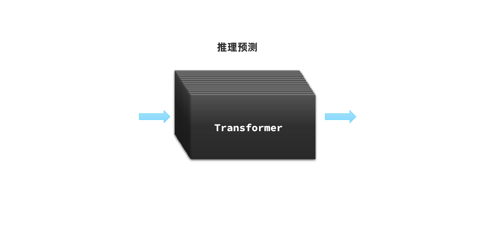

大模型接口规范
我们以DeepSeek官方给出的文档为例：
curl -X POST https://api.deepseek.com/chat/completions \
-H "Content-Type: application/json" \
-H "Authorization: Bearer <DeepSeek API Key>" \
-d '{
"model": "deepseek-chat",
"messages": [
{
"role": "system",
"content": "You are a helpful assistant."
},
{
"role": "user",
"content": "Hello!"
}
],
"stream": false
}'
接口说明
-
请求方式：通常是POST，因为要传递JSON风格的参数
-
请求URL：与平台有关
-
DeepSeek官方平台：https://api.deepseek.com/chat/completions
-
阿里云百炼平台：https://dashscope.aliyuncs.com/compatible-mode/v1
-
本地ollama部署的模型：http://localhost:11434
-
-
请求头：开放平台都需要提供API_KEY来校验权限，本地ollama则不需要
-
Content-Type: application/json，请求参数的格式，必须是application/json，稍后解释
-
Authorization: Bearer \<DeepSeek API Key>，上一节创建的API_KEY
-
-
请求参数：JSON格式：
{
"model": "deepseek-chat",
"messages": [
{"role": "system", "content": "You are a helpful assistant."},
{"role": "user", "content": "Hello!"}
],
"stream": false
}
- `model`：模型名称，DeepSeek支持`deepseek-reasoner`和`deepseek-chat`两者模型
- `messages`：发送给大模型的消息，`[]`是数组的意思，里面可以有多条消息。消息结构：
- `content`：是消息的内容
- `role`：消息的角色，有system、user、assisant三种角色
- `system`：是给大模型设定一个角色，比如你让她扮演你的奶奶，让她哄你睡觉
- `user`：就是用户提问的问题
- `assisant`：是大模型的回答
- `stream`：true，代表响应结果流式返回；false，代表响应结果一次性返回，但需要等待
注意，这里请求参数中的messages是一个消息数组，而且其中的消息要包含两个属性：
-
role：消息对应的角色
-
content：消息内容
其中System和User消息的内容，也被称为提示词（Prompt），也就是用户发送给大模型的指令。
-
System提示词，是系统指令，给大模型设定一个角色，比如你让她扮演你的奶奶，让她哄你睡觉
-
User提示词，是用户指令，也就是用户向大模型的提问或命令
提示词角色
通常消息的角色有三种：
| 角色 | 描述 | 示例 |
|---|---|---|
| system | 优先于user指令之前的指令，也就是给大模型设定角色和任务背景的系统指令 | 你是一个乐于助人的编程助手，你以小团团的风格来回答用户的问题。 |
| user | 终端用户输入的指令（类似于你在ChatGPT聊天框输入的内容） | 写一首关于Java编程的诗 |
| assistant | 由大模型生成的消息，可能是上一轮对话生成的结果 | 注意，用户可能与模型产生多轮对话，每轮对话模型都会生成不同结果。 |
其中System类型的消息非常重要！影响了后续AI会话的行为模式。
比如，我们会发现，当我们询问这些AI对话产品“你是谁”这个问题的时候，每一个AI的回答都不一样，这是怎么回事呢？
这其实是因为AI对话产品并不是直接把用户的提问发送给LLM，通常都会在user提问的前面通过System消息给模型设定好背景：

所以，当你问问题时，AI就会遵循System的设定来回答了。因此，不同的大模型由于System设定不同，回答的答案也不一样。
示例：
## Role
**System**: 你是一家名为《黑马程序员》的职业教育培训公司的智能客服，你的名字叫小黑。请以友好、热情的方式回答用户问题。
## Example
**User**: 你好
**Assisant**: 你好，我是小黑，很高兴认识你！😊 你是想了解我们的课程信息，还是有其他关于职业培训的问题需要咨询呢？无论什么问题，我都会尽力帮你解答哦！